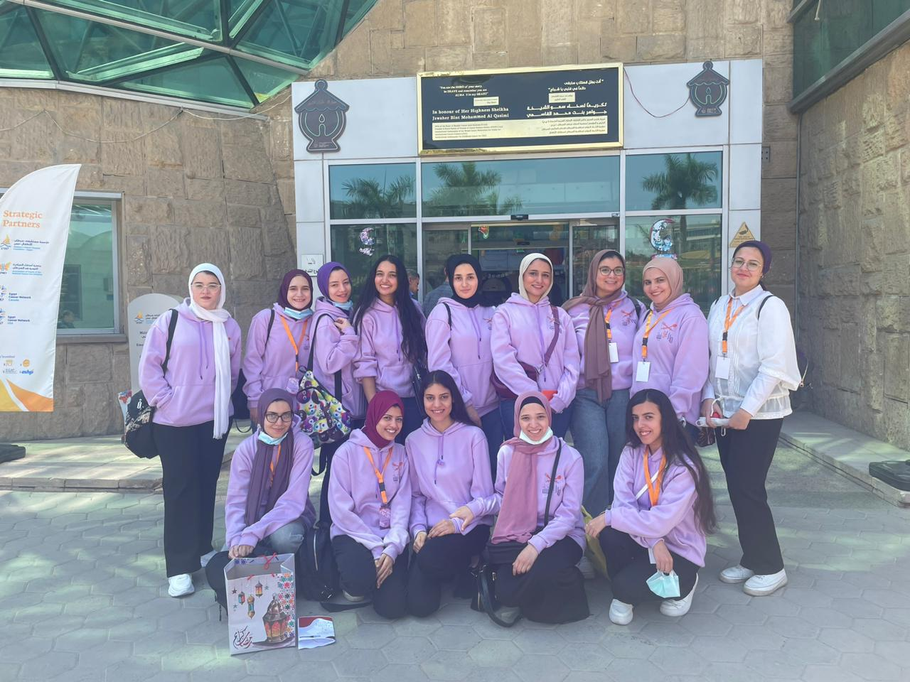
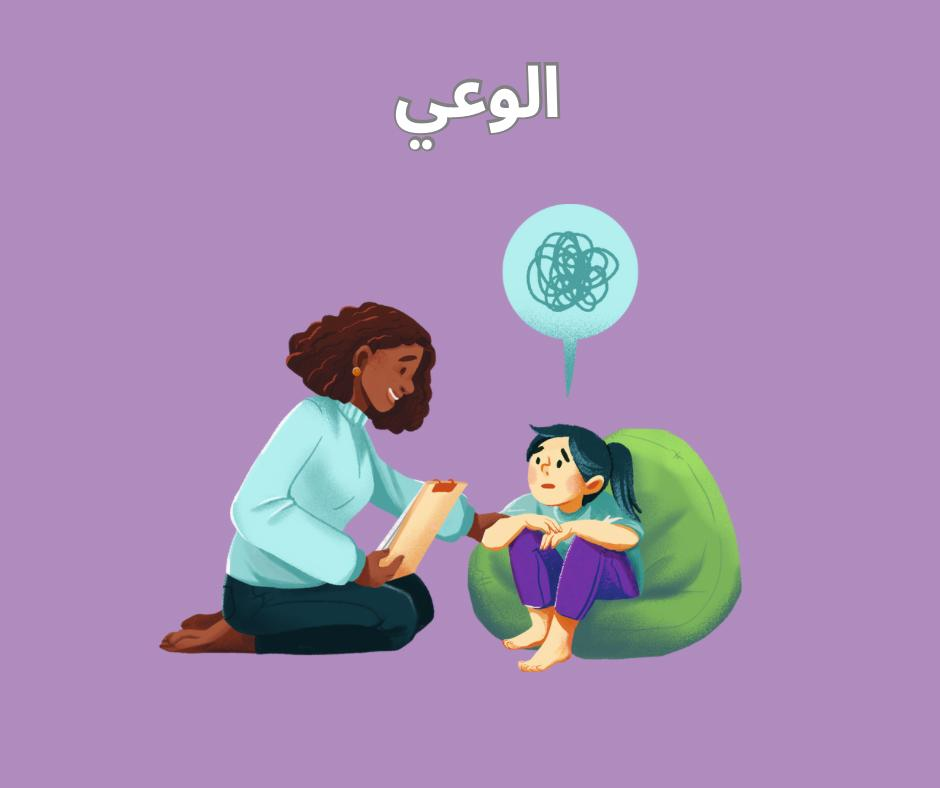
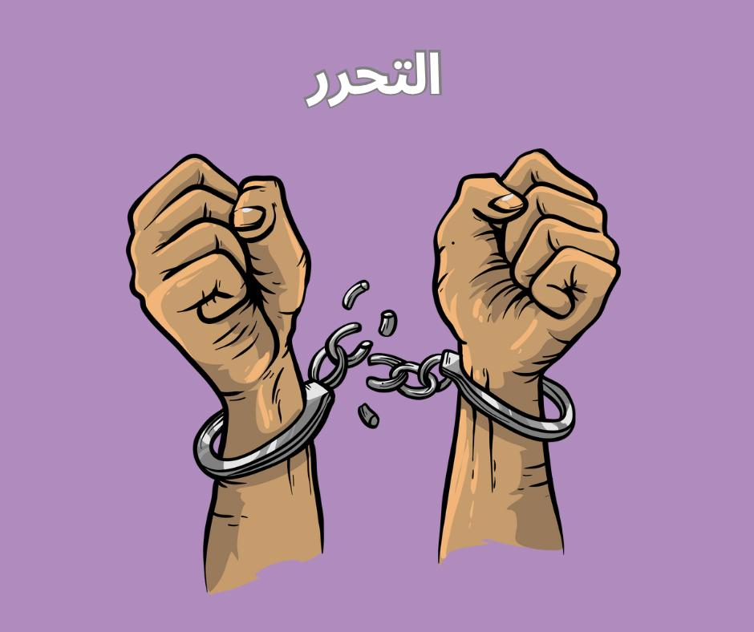

ماريونيت
احنا مين؟
ماريونيت هى حملة توعية إجتماعية عن مرض اضطراب الطعام، وهدفنا إننا نحقق الوعى الكامل والإدراك باضطرابات الطعام وأسبابها وطرق الوقاية منها فى جميع الاعمار المختلفة، شاركونا رحلتنا وكونوا معانا خطة بخطوة
تواصل معنا


